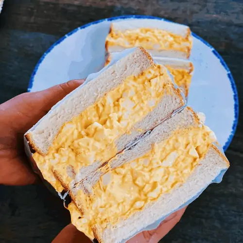

Egg Salad

Description
Egg salad is a simple dish that requires little in the way of ingredients or
time to make. Japanese egg salad further refines this simplicity.
This recipe focuses on a few quality ingredients. It's perfect for an egg salad
sandwich.
Ingredients
- 3 large hardboiled eggs
- 2 Tbps mayonaise
- 2 tsp milk
- 1/4 tsp salt
- 1/4 tsp sugar
- 1/8 pepper
Steps
- In a medium sized bowl, mash the hardboiled eggs
- Add the rest of the ingredients and mix
- Put the egg salad in the fridge for about ten minutes for the flavors to meld